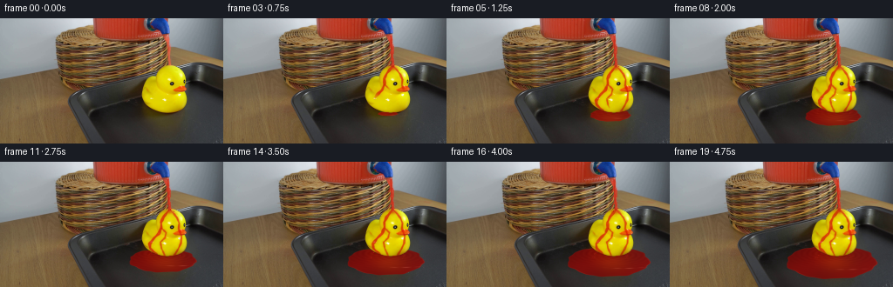
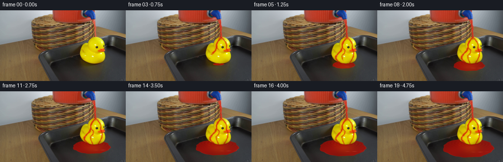
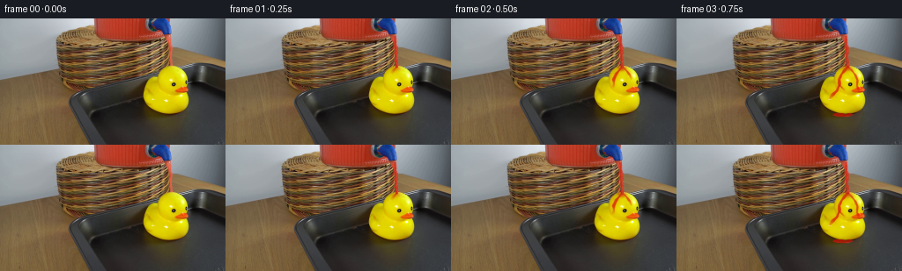

CODING AGENTS AS PIXEL WORLD MODELS
traex/GPT-6.1-Sol · 0085
点击播放 · 原生 RGB 像素
逐轮保存的候选
回放视频、检查图与代码变化。
每份候选均可单独播放。实际图片检查记录在下方工具轨迹中。
候选 01播放与检查图
点击播放 · 原生 RGB 像素

展开代码变化
--- 上一保存版本
+++ 本次保存版本
@@ -0,0 +1,189 @@
+from pathlib import Path
+import numpy as np
+from PIL import Image
+from scipy.ndimage import label, binary_fill_holes, gaussian_filter
+import artifact_io
+
+ROOT = Path(__file__).resolve().parent
+W, H, S = 256, 144, 4
+base = np.asarray(Image.open(ROOT / 'first_frame.png').convert('RGB'), dtype=np.uint8)
+Y, X = np.mgrid[:H*S, :W*S].astype(np.float32)
+X = (X + .5) / S - .5
+Y = (Y + .5) / S - .5
+B = np.repeat(np.repeat(base.astype(np.float32), S, 0), S, 1)
+# The yellow silhouette is measured from the original RGB values, with its
+# enclosed eye and highlights restored. No external segmentation is used.
+r, g, b = base.astype(float).transpose(2, 0, 1)
+y0, x0 = np.mgrid[:H, :W]
+mask = (x0>=163)&(x0<=214)&(y0>=54)&(y0<=108)&(r>125)&(g>88)&(g>b*1.13)&(r>b*1.2)
+labs, _ = label(mask)
+counts = np.bincount(labs.ravel()); counts[0] = 0
+mask = binary_fill_holes(labs==counts.argmax())
+# Restore the orange bill in the same connected silhouette.
+mask |= (x0>=198)&(x0<=214)&(y0>=77)&(y0<=84)&(r>155)&(r>g*1.4)
+mask = binary_fill_holes(mask)
+DUCK = np.asarray(Image.fromarray((mask*255).astype(np.uint8)).resize((W*S,H*S),Image.Resampling.BILINEAR),np.float32)/255
+LIGHT = np.asarray(Image.fromarray(base).resize((W*S,H*S),Image.Resampling.BILINEAR),np.float32)
+
+# Path distance and fractional arclength for films following the curved duck.
+def path_field(points):
+ pts=np.asarray(points,dtype=np.float32)
+ lengths=np.sqrt(np.sum(np.diff(pts,axis=0)**2,axis=1))
+ total=lengths.sum(); offset=0
+ dist=np.full_like(X,1e5); progress=np.zeros_like(X)
+ for a,c,ll in zip(pts[:-1],pts[1:],lengths):
+ v=c-a
+ u=np.clip(((X-a[0])*v[0]+(Y-a[1])*v[1])/(ll*ll),0,1)
+ dd=np.sqrt((X-a[0]-u*v[0])**2+(Y-a[1]-u*v[1])**2)
+ take=dd<dist
+ progress=np.where(take,(offset+u*ll)/total,progress)
+ dist=np.minimum(dist,dd);offset+=ll
+ return dist,progress
+
+paths=[
+ [(194,54.5),(191,58),(187,63),(184.2,69),(184.5,75),(181.7,82),(176.4,87),(171.1,94),(171.7,99),(178.4,105.8)],
+ [(194.4,54.8),(198.7,59),(202.5,64),(205,70),(204.4,76.5),(207.6,85),(207,93),(203.8,100),(199.4,107)],
+ [(185,76),(190,81),(188.6,87),(183.4,92),(184.7,99),(188.2,106.7)],
+]
+fields=[path_field(p) for p in paths]
+# Small deterministic splash particles, launched by the impacting stream.
+rng=np.random.default_rng(891)
+head_drops=[]
+for n in range(86):
+ birth=.12+n*.057
+ side=-1 if rng.random()<.54 else 1
+ head_drops.append((birth,193.6+rng.normal(0,.5),55.0,side*rng.uniform(5,21),-rng.uniform(11,25),rng.uniform(.24,.57)))
+tray_drops=[]
+for n in range(68):
+ birth=.64+n*.071
+ side=-1 if rng.random()<.56 else 1
+ tray_drops.append((birth,174 if side<0 else 202,104.5,side*rng.uniform(10,28),-rng.uniform(5,16),rng.uniform(.22,.52)))
+
+def composite(out, color, alpha):
+ alpha=np.clip(alpha,0,1)
+ if np.isscalar(color): color=np.full_like(out,color)
+ out *= 1-alpha[...,None]
+ out += np.asarray(color,dtype=np.float32)*alpha[...,None]
+
+def drop(out,xx,yy,rad,alpha=.85,elong=1.0):
+ if xx<0 or xx>=W or yy<0 or yy>=H:return
+ d=np.sqrt(((X-xx)/rad)**2+((Y-yy)/(rad*elong))**2)
+ a=np.clip((1.15-d)*2.5,0,1)*alpha
+ c=np.empty_like(out);c[:]=[176,25,12]
+ gl=np.exp(-(((X-xx+rad*.3)/(rad*.23))**2+((Y-yy+rad*.3)/(rad*.38))**2))
+ c+=gl[...,None]*np.array([40,72,57],np.float32)
+ composite(out,c,a)
+
+def frame(t):
+ out=B.copy()
+ flowtime=max(0,t-.1)
+ pooltime=max(0,t-.74)
+ # A shallow continuous pool expands in tray perspective, flowing around the
+ # unchanged duck silhouette. Tiny lobes prevent a geometrically perfect edge.
+ if pooltime>0:
+ growth=(pooltime/4.01)**.57
+ cx=188.5-3.5*growth; cy=109.1+5.7*growth
+ rx=11+41*growth; ry=2.1+17.5*growth
+ ux=(X-cx)/rx; uy=(Y-cy)/ry
+ theta=np.arctan2(uy,ux)
+ rr=np.sqrt(ux*ux+uy*uy)
+ edge=1+.018*np.sin(theta*7+.4)+.017*np.sin(theta*11+1.8)+.008*np.sin(theta*19-.6)
+ a=np.clip((edge-rr)*np.minimum(rx,ry)*2.2,0,1)
+ # Restrict the pool to the interior surface of the baking tray.
+ a*=np.clip((X-(88+(Y-84)*.34))/1.2,0,1)
+ a*=np.clip((Y-94)/3,0,1)
+ a*=(1-DUCK)
+ shade=(.94+.06*np.sin(X*.08+Y*.12))
+ c=np.empty_like(out)
+ c[...,0]=118*shade+LIGHT[...,0]*.22
+ c[...,1]=9+LIGHT[...,1]*.065
+ c[...,2]=7+LIGHT[...,2]*.047
+ # Soft reflections of the duck are retained in the translucent red pool.
+ refl=np.exp(-((X-191)/18)**2-((Y-115)/10)**2)
+ c+=refl[...,None]*np.array([28,16,0],np.float32)
+ # Ripples are elongated on the horizontal surface, not circular in frame.
+ wave=np.zeros_like(X)
+ for sx,sy in [(176,105),(201,107)]:
+ d=np.sqrt(((X-sx)*.58)**2+((Y-sy)*1.7)**2)
+ wave+=np.sin(d*1.65-t*12)*np.exp(-d/14)*.5
+ c[...,0]+=wave*11; c[...,1]+=wave*6;c[...,2]+=wave*4
+ # Broken, fine rim highlights and small moving liquid glints.
+ rim=np.exp(-((rr-edge+.009)*min(rx,ry)/.44)**2)
+ gleam=(.3+.7*np.maximum(0,np.sin(theta*3+1)))
+ c+= (rim*gleam)[...,None]*np.array([35,20,13],np.float32)
+ reflected=np.exp(-((Y-(cy+ry*.4+.8*np.sin(X*.07))) / .46)**2)
+ reflected*=np.exp(-((X-207)/17)**2)*(.55+.45*np.cos(X*.42))
+ c+=reflected[...,None]*np.array([39,38,32],np.float32)
+ composite(out,c,a*.92)
+
+ # Thin red films and branching rivulets run over, rather than recolor, rubber.
+ wet=np.zeros_like(X)
+ broad=np.zeros_like(X)
+ for k,(dist,progress) in enumerate(fields):
+ age=flowtime-([0, .09, .46][k])
+ front=np.clip((age-progress*[.87,.95,.75][k])/.14,0,1)
+ width=[1.65,1.12,.94][k]
+ width=width*(.83+.18*np.sin(progress*23-t*8+k)+.1*np.sin(progress*49-t*13))
+ stripe=np.clip((width+.48-dist)/.8,0,1)
+ stripe*=front
+ wet=1-(1-wet)*(1-stripe*[.78,.7,.63][k])
+ broad=np.maximum(broad,np.exp(-(dist/(width*2.8))**2)*front*.16)
+ crown=np.exp(-(((X-194)/4.5)**2+((Y-57)/2.5)**2))*np.clip(flowtime/.28,0,1)*.58
+ wet=np.maximum(wet,crown)
+ wet=1-(1-wet)*(1-broad)
+ wet*=DUCK
+ # Preserve a real dark eye and the body contours through the transparent film.
+ wet*=np.clip((LIGHT[...,0]+LIGHT[...,1])/170, .14, 1)
+ c=np.empty_like(out)
+ c[...,0]=LIGHT[...,0]*.89+9
+ c[...,1]=LIGHT[...,1]*.09+12
+ c[...,2]=LIGHT[...,2]*.17+6
+ spec=np.zeros_like(X)
+ for k,(dist,progress) in enumerate(fields):
+ spec+=np.exp(-((dist-.45)/.28)**2)*np.maximum(0,np.sin(progress*33-t*10+k))**8*.23
+ c+=spec[...,None]*np.array([32,94,77],np.float32)
+ composite(out,c,wet)
+
+ # Animate the pre-existing stream descending from the original dispenser tap.
+ active=(Y>=19)&(Y<=55.8)&(X>=189)&(X<=199)
+ v=np.clip((Y-19)/36,0,1)
+ center=191.8+2.2*v+.15*np.sin(v*19-t*10)*np.sin(v*np.pi)
+ half=1.10+.14*np.sin(v*29-t*13)+.09*np.sin(v*63-t*18)
+ # A diffuse red edge is already present in the first frame; blend it, keeping
+ # the original soft optics instead of replacing the basket and spigot.
+ old=(B[...,0]>B[...,1]*1.4)&(B[...,0]>B[...,2]*1.4)&active
+ a=np.maximum(np.clip((half+.35-np.abs(X-center))/.65,0,1)*active,old*.5)
+ c=np.empty_like(out); c[:]=[196,37,20]
+ side=np.exp(-((X-center-.42)/.25)**2)
+ light=(.45+.55*np.maximum(0,np.sin(v*42-t*17)))
+ c+= (side*light)[...,None]*np.array([28,65,42],np.float32)
+ c[...,0]+=5*np.sin(v*30-t*10)
+ composite(out,c,a*.86)
+
+ # Small ballistic splash droplets around the crown. Their lifetimes continue
+ # between frames at a fixed physical speed, with no camera motion.
+ for birth,sx,sy,vx,vy,rad in head_drops:
+ age=t-birth
+ if 0<age<.36:
+ xx=sx+vx*age; yy=sy+vy*age+64*age*age
+ if yy<57.5:
+ drop(out,xx,yy,rad,.78,1.2)
+ for birth,sx,sy,vx,vy,rad in tray_drops:
+ age=t-birth
+ if 0<age<.32:
+ xx=sx+vx*age; yy=sy+vy*age+77*age*age
+ # Runoff is only visible in front of, or outside, the rubber silhouette.
+ if 0<=int(yy)<H and 0<=int(xx)<W and not mask[int(yy),int(xx)]:
+ drop(out,xx,yy,rad,.76,1.05)
+ elif .32<=age:
+ xx=sx+vx*.32; yy=sy+vy*.32+77*.32**2
+ if 0<=int(yy)<H and 0<=int(xx)<W and not mask[int(yy),int(xx)]:
+ drop(out,xx,yy,rad*.87,.48,.38)
+ return np.clip(np.rint(out.reshape(H,S,W,S,3).mean((1,3))),0,255).astype(np.uint8)
+
+def main():
+ frames=np.stack([base]+[frame(n/4) for n in range(1,20)])
+ artifact_io.save(frames,ROOT)
+ np.save(ROOT / '.tmp' / 'candidate_rgb.npy', frames)
+
+if __name__=='__main__':main()
候选 02播放与检查图
点击播放 · 原生 RGB 像素


展开代码变化
--- 上一保存版本
+++ 本次保存版本
@@ -95,9 +95,9 @@
a*=(1-DUCK)
shade=(.94+.06*np.sin(X*.08+Y*.12))
c=np.empty_like(out)
- c[...,0]=118*shade+LIGHT[...,0]*.22
- c[...,1]=9+LIGHT[...,1]*.065
- c[...,2]=7+LIGHT[...,2]*.047
+ c[...,0]=147*shade+LIGHT[...,0]*.19
+ c[...,1]=12+LIGHT[...,1]*.075
+ c[...,2]=7+LIGHT[...,2]*.045
# Soft reflections of the duck are retained in the translucent red pool.
refl=np.exp(-((X-191)/18)**2-((Y-115)/10)**2)
c+=refl[...,None]*np.array([28,16,0],np.float32)
@@ -182,6 +182,7 @@
return np.clip(np.rint(out.reshape(H,S,W,S,3).mean((1,3))),0,255).astype(np.uint8)
def main():
+ (ROOT / '.tmp').mkdir(exist_ok=True)
frames=np.stack([base]+[frame(n/4) for n in range(1,20)])
artifact_io.save(frames,ROOT)
np.save(ROOT / '.tmp' / 'candidate_rgb.npy', frames)
可观测工具轨迹
实际执行的命令与返回图片。
命令 1exit 0
/bin/bash -lc 'ls -la && cat prompt.txt && cat GENERATION_RULES.md'
命令 2exit 0
/bin/bash -lc "cat artifact_io.py && python - <<'PY'
from PIL import Image
import numpy as np
im=np.array(Image.open('first_frame.png'));print('shape', im.shape)
# ascii nearest basic perceptual colors @ medium resolution
pal=np.array([[10,10,10],[60,50,45],[115,90,65],[160,140,115],[205,190,165],[240,235,225],[245,210,20],[230,130,0],[180,12,20],[110,10,10],[90,90,95],[150,150,150],[220,220,220],[70,85,90]])
chars=' .,:;WYOrR-=+#'
I=np.array(Image.open('first_frame.png').resize((100,56)))
d=((I[:,:,None,:].astype(float)-pal)**2).sum(-1);ids=d.argmin(-1)
for row in ids:print(''.join(chars[i] for i in row))
PY"命令 3exit 0
/bin/bash -lc "python - <<'PY'
import numpy as np
from PIL import Image
im=np.array(Image.open('first_frame.png'));r,g,b=im.transpose(2,0,1).astype(float)
for name,m in [('red',(r>g*1.55)&(r>b*1.4)&(r>70)&(g<100)),('yellow',(r>140)&(g>85)&(b<90)&(r>g*1.07))]:
print(name)
for y in range(0,111):
xs=np.where(m[y])[0]
if len(xs):
runs=np.split(xs,np.where(np.diff(xs)>1)[0]+1)
print(y,' '.join(f'{a[0]}-{a[-1]}' for a in runs))
print('UPPER right region grayscale: x=145..209 y0..59')
gray=im.mean(2)
chars=' .:-=+*#%@'
for y in range(60):
print(f'{y:02d} '+''.join(chars[min(9,int(v)//26)] for v in gray[y,145:210]))
print('pixel values area tap x160..195 step2')
for y in range(0,42,2):
print(y,' '.join(f'{x}:{tuple(im[y,x])}' for x in range(158,198,4)))
PY"命令 4exit 0
/bin/bash -lc "python - <<'PY'
from PIL import Image
import numpy as np
im=np.array(Image.open('first_frame.png')).astype(float)
chars=' .:-=+*#%@'
print('color map x155..220 y0..110; y: yellow, o orange, r red, b blue, greys luminance')
for y in range(111):
line=''
for r,g,b in im[y,155:221]:
if b>r*1.2 and b>g*1.3: c='B' if b>100 else 'b'
elif r>g*1.5 and r>b*1.5 and r>90:c='R'
elif r>120 and g>95 and r>b*2.3 and g>b*1.8:c='Y' if g>135 else 'o'
else: c=chars[min(9,int((r+g+b)/3)//26)]
line+=c
print(f'{y:03} '+line)
print('duck zone detailed sample grid')
for y in range(52,82):
print(y,' '.join(f'{x}:{tuple(int(v) for v in im[y,x])}' for x in range(182,210,2)))
PY"命令 5exit 0
/bin/bash -lc "python - <<'PY'
from PIL import Image
import numpy as np
im=np.array(Image.open('first_frame.png'))
for y in range(0,62):
print(f'{y:02d}', ' '.join(f'{x}:{im[y,x,0]:3},{im[y,x,1]:3},{im[y,x,2]:3}' for x in range(187,199)))
print('grays for tray (every 2px) x80..255 y75..143')
chars=' .:-=+*#%@'
for y in range(75,144,2): print(f'{y:03} '+''.join(chars[min(9,int(im[y,x].mean())//26)] for x in range(80,256,2)))
PY"命令 6exit 0
/bin/bash -lc "python - <<'PY'
import scipy
print(scipy.__version__)
from PIL import Image
import numpy as np
from scipy.ndimage import label,binary_fill_holes
I=np.array(Image.open('first_frame.png')).astype(float);r,g,b=I.transpose(2,0,1);y,x=np.mgrid[:144,:256]
m=(x>158)&(x<218)&(y>52)&(y<110)&(r>130)&(g>100)&(b<180)&(g>b*1.15)&(r>b*1.2)
l,n=label(m);a=np.bincount(l.flat);a[0]=0;m=binary_fill_holes(l==a.argmax())
for yy in range(53,111):
xs=np.where(m[yy])[0]
print(yy,(xs.min(),xs.max()) if len(xs) else '-',end='; ')
if yy%4==0:print()
PY"命令 7exit 0
/bin/bash -lc "python - <<'PY'
from PIL import Image
import numpy as np
im=np.array(Image.open('first_frame.png'))
print('RGB grid of lower scene')
for y in [50,60,70,80,90,100,105,110,115,120,130,140]:
print(y,' '.join(f'{x}={tuple(int(v) for v in im[y,x])}' for x in [80,90,100,110,120,140,155,165,175,185,195,205,215,225,235,245,255]))
PY"命令 8exit 0
/bin/bash -lc "cat > generate.py <<'PY'
from pathlib import Path
import numpy as np
from PIL import Image
from scipy.ndimage import label, binary_fill_holes, gaussian_filter
import artifact_io
ROOT = Path(__file__).resolve().parent
W, H, S = 256, 144, 4
base = np.asarray(Image.open(ROOT / 'first_frame.png').convert('RGB'), dtype=np.uint8)
Y, X = np.mgrid[:H*S, :W*S].astype(np.float32)
X = (X + .5) / S - .5
Y = (Y + .5) / S - .5
B = np.repeat(np.repeat(base.astype(np.float32), S, 0), S, 1)
# The yellow silhouette is measured from the original RGB values, with its
# enclosed eye and highlights restored. No external segmentation is used.
r, g, b = base.astype(float).transpose(2, 0, 1)
y0, x0 = np.mgrid[:H, :W]
mask = (x0>=163)&(x0<=214)&(y0>=54)&(y0<=108)&(r>125)&(g>88)&(g>b*1.13)&(r>b*1.2)
labs, _ = label(mask)
counts = np.bincount(labs.ravel()); counts[0] = 0
mask = binary_fill_holes(labs==counts.argmax())
# Restore the orange bill in the same connected silhouette.
mask |= (x0>=198)&(x0<=214)&(y0>=77)&(y0<=84)&(r>155)&(r>g*1.4)
mask = binary_fill_holes(mask)
DUCK = np.asarray(Image.fromarray((mask*255).astype(np.uint8)).resize((W*S,H*S),Image.Resampling.BILINEAR),np.float32)/255
LIGHT = np.asarray(Image.fromarray(base).resize((W*S,H*S),Image.Resampling.BILINEAR),np.float32)
# Path distance and fractional arclength for films following the curved duck.
def path_field(points):
pts=np.asarray(points,dtype=np.float32)
lengths=np.sqrt(np.sum(np.diff(pts,axis=0)**2,axis=1))
total=lengths.sum(); offset=0
dist=np.full_like(X,1e5); progress=np.zeros_like(X)
for a,c,ll in zip(pts[:-1],pts[1:],lengths):
v=c-a
u=np.clip(((X-a[0])*v[0]+(Y-a[1])*v[1])/(ll*ll),0,1)
dd=np.sqrt((X-a[0]-u*v[0])**2+(Y-a[1]-u*v[1])**2)
take=dd<dist
progress=np.where(take,(offset+u*ll)/total,progress)
dist=np.minimum(dist,dd);offset+=ll
return dist,progress
paths=[
[(194,54.5),(191,58),(187,63),(184.2,69),(184.5,75),(181.7,82),(176.4,87),(171.1,94),(171.7,99),(178.4,105.8)],
[(194.4,54.8),(198.7,59),(202.5,64),(205,70),(204.4,76.5),(207.6,85),(207,93),(203.8,100),(199.4,107)],
[(185,76),(190,81),(188.6,87),(183.4,92),(184.7,99),(188.2,106.7)],
]
fields=[path_field(p) for p in paths]
# Small deterministic splash particles, launched by the impacting stream.
rng=np.random.default_rng(891)
head_drops=[]
for n in range(86):
birth=.12+n*.057
side=-1 if rng.random()<.54 else 1
head_drops.append((birth,193.6+rng.normal(0,.5),55.0,side*rng.uniform(5,21),-rng.uniform(11,25),rng.uniform(.24,.57)))
tray_drops=[]
for n in range(68):
birth=.64+n*.071
side=-1 if rng.random()<.56 else 1
tray_drops.append((birth,174 if side<0 else 202,104.5,side*rng.uniform(10,28),-rng.uniform(5,16),rng.uniform(.22,.52)))
def composite(out, color, alpha):
alpha=np.clip(alpha,0,1)
if np.isscalar(color): color=np.full_like(out,color)
out *= 1-alpha[...,None]
out += np.asarray(color,dtype=np.float32)*alpha[...,None]
def drop(out,xx,yy,rad,alpha=.85,elong=1.0):
if xx<0 or xx>=W or yy<0 or yy>=H:return
d=np.sqrt(((X-xx)/rad)**2+((Y-yy)/(rad*elong))**2)
a=np.clip((1.15-d)*2.5,0,1)*alpha
c=np.empty_like(out);c[:]=[176,25,12]
gl=np.exp(-(((X-xx+rad*.3)/(rad*.23))**2+((Y-yy+rad*.3)/(rad*.38))**2))
c+=gl[...,None]*np.array([40,72,57],np.float32)
composite(out,c,a)
def frame(t):
out=B.copy()
flowtime=max(0,t-.1)
pooltime=max(0,t-.74)
# A shallow continuous pool expands in tray perspective, flowing around the
# unchanged duck silhouette. Tiny lobes prevent a geometrically perfect edge.
if pooltime>0:
growth=(pooltime/4.01)**.57
cx=188.5-3.5*growth; cy=109.1+5.7*growth
rx=11+41*growth; ry=2.1+17.5*growth
ux=(X-cx)/rx; uy=(Y-cy)/ry
theta=np.arctan2(uy,ux)
rr=np.sqrt(ux*ux+uy*uy)
edge=1+.018*np.sin(theta*7+.4)+.017*np.sin(theta*11+1.8)+.008*np.sin(theta*19-.6)
a=np.clip((edge-rr)*np.minimum(rx,ry)*2.2,0,1)
# Restrict the pool to the interior surface of the baking tray.
a*=np.clip((X-(88+(Y-84)*.34))/1.2,0,1)
a*=np.clip((Y-94)/3,0,1)
a*=(1-DUCK)
shade=(.94+.06*np.sin(X*.08+Y*.12))
c=np.empty_like(out)
c[...,0]=118*shade+LIGHT[...,0]*.22
c[...,1]=9+LIGHT[...,1]*.065
c[...,2]=7+LIGHT[...,2]*.047
# Soft reflections of the duck are retained in the translucent red pool.
refl=np.exp(-((X-191)/18)**2-((Y-115)/10)**2)
c+=refl[...,None]*np.array([28,16,0],np.float32)
# Ripples are elongated on the horizontal surface, not circular in frame.
wave=np.zeros_like(X)
for sx,sy in [(176,105),(201,107)]:
d=np.sqrt(((X-sx)*.58)**2+((Y-sy)*1.7)**2)
wave+=np.sin(d*1.65-t*12)*np.exp(-d/14)*.5
c[...,0]+=wave*11; c[...,1]+=wave*6;c[...,2]+=wave*4
# Broken, fine rim highlights and small moving liquid glints.
rim=np.exp(-((rr-edge+.009)*min(rx,ry)/.44)**2)
gleam=(.3+.7*np.maximum(0,np.sin(theta*3+1)))
c+= (rim*gleam)[...,None]*np.array([35,20,13],np.float32)
reflected=np.exp(-((Y-(cy+ry*.4+.8*np.sin(X*.07))) / .46)**2)
reflected*=np.exp(-((X-207)/17)**2)*(.55+.45*np.cos(X*.42))
c+=reflected[...,None]*np.array([39,38,32],np.float32)
composite(out,c,a*.92)
# Thin red films and branching rivulets run over, rather than recolor, rubber.
wet=np.zeros_like(X)
broad=np.zeros_like(X)
for k,(dist,progress) in enumerate(fields):
age=flowtime-([0, .09, .46][k])
front=np.clip((age-progress*[.87,.95,.75][k])/.14,0,1)
width=[1.65,1.12,.94][k]
width=width*(.83+.18*np.sin(progress*23-t*8+k)+.1*np.sin(progress*49-t*13))
stripe=np.clip((width+.48-dist)/.8,0,1)
stripe*=front
wet=1-(1-wet)*(1-stripe*[.78,.7,.63][k])
broad=np.maximum(broad,np.exp(-(dist/(width*2.8))**2)*front*.16)
crown=np.exp(-(((X-194)/4.5)**2+((Y-57)/2.5)**2))*np.clip(flowtime/.28,0,1)*.58
wet=np.maximum(wet,crown)
wet=1-(1-wet)*(1-broad)
wet*=DUCK
# Preserve a real dark eye and the body contours through the transparent film.
wet*=np.clip((LIGHT[...,0]+LIGHT[...,1])/170, .14, 1)
c=np.empty_like(out)
c[...,0]=LIGHT[...,0]*.89+9
c[...,1]=LIGHT[...,1]*.09+12
c[...,2]=LIGHT[...,2]*.17+6
spec=np.zeros_like(X)
for k,(dist,progress) in enumerate(fields):
spec+=np.exp(-((dist-.45)/.28)**2)*np.maximum(0,np.sin(progress*33-t*10+k))**8*.23
c+=spec[...,None]*np.array([32,94,77],np.float32)
composite(out,c,wet)
# Animate the pre-existing stream descending from the original dispenser tap.
active=(Y>=19)&(Y<=55.8)&(X>=189)&(X<=199)
v=np.clip((Y-19)/36,0,1)
center=191.8+2.2*v+.15*np.sin(v*19-t*10)*np.sin(v*np.pi)
half=1.10+.14*np.sin(v*29-t*13)+.09*np.sin(v*63-t*18)
# A diffuse red edge is already present in the first frame; blend it, keeping
# the original soft optics instead of replacing the basket and spigot.
old=(B[...,0]>B[...,1]*1.4)&(B[...,0]>B[...,2]*1.4)&active
a=np.maximum(np.clip((half+.35-np.abs(X-center))/.65,0,1)*active,old*.5)
c=np.empty_like(out); c[:]=[196,37,20]
side=np.exp(-((X-center-.42)/.25)**2)
light=(.45+.55*np.maximum(0,np.sin(v*42-t*17)))
c+= (side*light)[...,None]*np.array([28,65,42],np.float32)
c[...,0]+=5*np.sin(v*30-t*10)
composite(out,c,a*.86)
# Small ballistic splash droplets around the crown. Their lifetimes continue
# between frames at a fixed physical speed, with no camera motion.
for birth,sx,sy,vx,vy,rad in head_drops:
age=t-birth
if 0<age<.36:
xx=sx+vx*age; yy=sy+vy*age+64*age*age
if yy<57.5:
drop(out,xx,yy,rad,.78,1.2)
for birth,sx,sy,vx,vy,rad in tray_drops:
age=t-birth
if 0<age<.32:
xx=sx+vx*age; yy=sy+vy*age+77*age*age
# Runoff is only visible in front of, or outside, the rubber silhouette.
if 0<=int(yy)<H and 0<=int(xx)<W and not mask[int(yy),int(xx)]:
drop(out,xx,yy,rad,.76,1.05)
elif .32<=age:
xx=sx+vx*.32; yy=sy+vy*.32+77*.32**2
if 0<=int(yy)<H and 0<=int(xx)<W and not mask[int(yy),int(xx)]:
drop(out,xx,yy,rad*.87,.48,.38)
return np.clip(np.rint(out.reshape(H,S,W,S,3).mean((1,3))),0,255).astype(np.uint8)
def main():
frames=np.stack([base]+[frame(n/4) for n in range(1,20)])
artifact_io.save(frames,ROOT)
np.save(ROOT / '.tmp' / 'candidate_rgb.npy', frames)
if __name__=='__main__':main()
PY
python generate.py"命令 9exit 0
/bin/bash -lc "python - <<'PY'
import numpy as np
from PIL import Image
F=np.load('.tmp/candidate_rgb.npy');B=np.array(Image.open('first_frame.png'))
print(F.shape,F.dtype,'first identical:',np.array_equal(F[0],B))
for n in [1,3,7,11,15,19]:
d=np.max(abs(F[n].astype(float)-B),axis=2);ys,xs=np.where(d>5)
print(n,'modified',len(xs),'bounds', (xs.min(),ys.min(),xs.max(),ys.max()),'step MAE',abs(F[n].astype(float)-F[n-1]).mean())
# near the duck and pool a numeric symbolic map
r,g,b=F[n].astype(float).transpose(2,0,1)
if n not in [3,11,19]:continue
print('red/yellow/baseline map region x140:240 y50:140 (2pix sampling)')
for y in range(50,140,2):
s=''
for x in range(140,240,2):
if r[y,x]>g[y,x]*2 and r[y,x]>b[y,x]*2 and r[y,x]>100:s+='R'
elif r[y,x]>140 and g[y,x]>110 and b[y,x]<60:s+='Y'
elif d[y,x]>5:s+='+'
else:s+='.'
print(s)
print('Artifacts:', __import__('os').listdir('.'))
PY"命令 10exit 0
/bin/bash -lc "python generate.py && python - <<'PY'
from PIL import Image
import numpy as np
z=np.load('pixels.npz')['pixels']
assert z.shape==(144,256,20)
f=np.array(Image.open('frames/00.png'))
assert np.array_equal(f,np.array(Image.open('first_frame.png')))
assert len(list(__import__('pathlib').Path('frames').glob('*.png')))==20
print('Verified: 20 RGB frames at 256Ã144, first frame pixel-identical.')
PY"保存候选 2 份；完成命令 10 次；可验证图片返回 0 张。原始 API 响应与完整日志保留在本地。